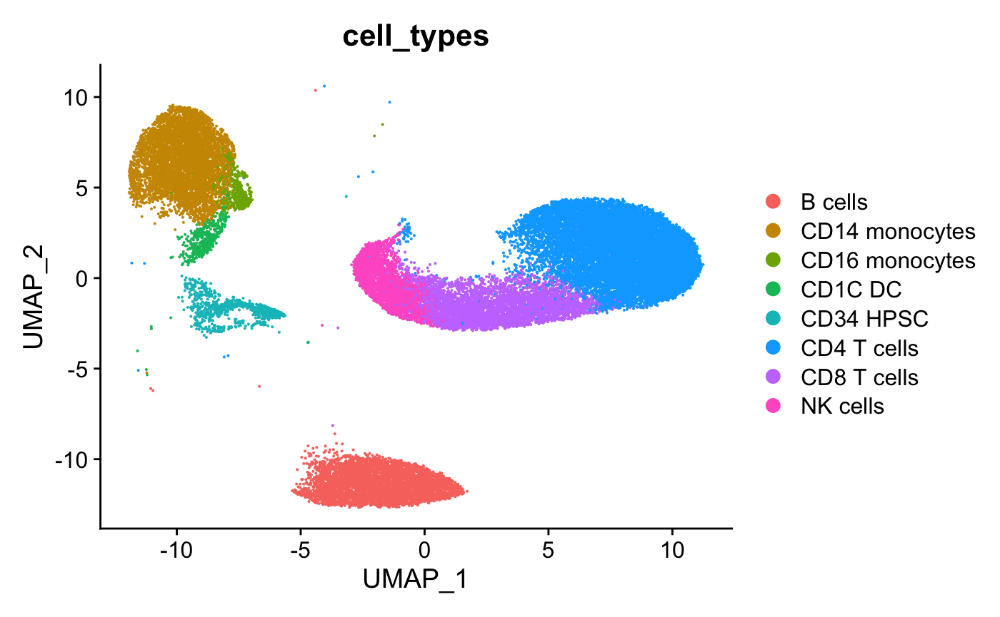
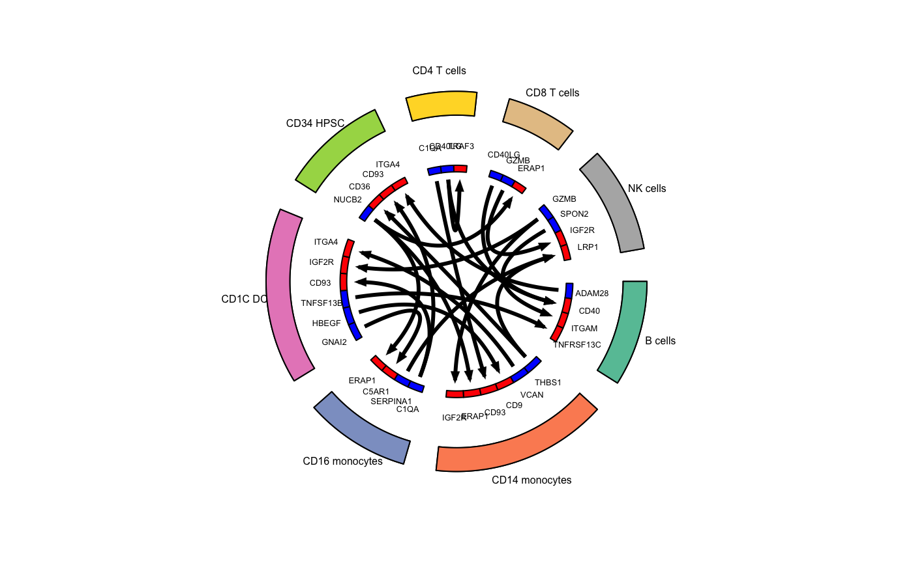

celltalker.RmdWelcome to celltalker. This vignette will show the simpliest use case of celltalker, namely and identification the top putative ligand and receptor interactions across cell types from the Human Cell Atlas 40,000 Bone Marrow Cells dataset. This dataset is publicly available in a convenient form from the SeuratData package. Check out instructions for downloading this dataset (hcabm40k) here.
Some pre-processing has been done to facilitate filtering of cells to canonical immune populations and annotating cell types. Check out data-raw for more info.
# Load packages
suppressMessages({
library(celltalker)
library(Seurat)
suppressWarnings(
library(SeuratData)
)
library(tidyverse)
})
# Load Human Cell Atlast Bone Marrow from SeuratData
data(hcabm40k)
# Filter cell and assign cell types to the dataset
# NB: hca_bm_umap_cell_types has cell types and UMAP embeddings
hca_bm <- hcabm40k[,rownames(hca_bm_umap_cell_types)]
hca_bm[["cell_types"]] <- hca_bm_umap_cell_types$cell_types
# Process data
hca_bm <- NormalizeData(hca_bm)
# Add UMAP coordinates
hca_bm[["umap"]] <- CreateDimReducObject(embeddings=as.matrix(hca_bm_umap_cell_types[,1:2]),
key="UMAP_",assay="RNA")
# View cell types
DimPlot(hca_bm,group.by="cell_types")
## Run celltalker
hca_bm_interactions <- celltalk(input_object=hca_bm,
metadata_grouping="cell_types",
ligand_receptor_pairs=ramilowski_pairs,
number_cells_required=100,
min_expression=1000,
max_expression=20000,
scramble_times=10)
## Identify top statistically significant interactions
top_stats <- hca_bm_interactions %>%
mutate(fdr=p.adjust(p_val,method="fdr")) %>%
filter(fdr<0.05) %>%
group_by(cell_type1) %>%
top_n(3,interact_ratio) %>%
ungroup()
## Generate a circos plot
colors_use <- RColorBrewer::brewer.pal(n=length(unique(hca_bm$cell_types)),"Set2")
circos_plot(ligand_receptor_frame=top_stats,
cell_group_colors=colors_use,
ligand_color="blue",
receptor_color="red",
cex_outer=0.5,
cex_inner=0.4)
We have now demonstrated a use case for celltalker in which we identified the top 3 ligand/receptor interactions by joint mean expression of cognate ligands and receptors across cell types.
If you have replicate samples, it might be of interest to identify ligand receptor interactions that are statistically different between groups of samples. We recommend checking out the vignette on identifying statistically significant interactions between groups of replicate samples if this would be useful for your dataset.